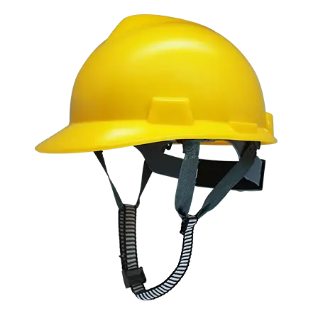
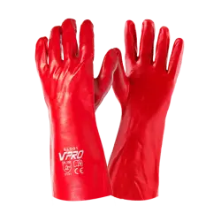
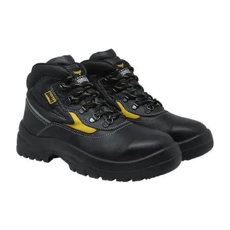
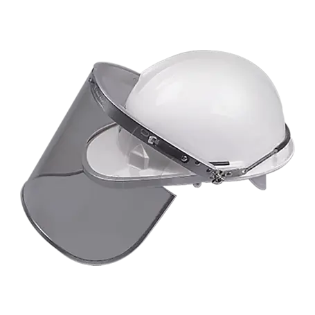
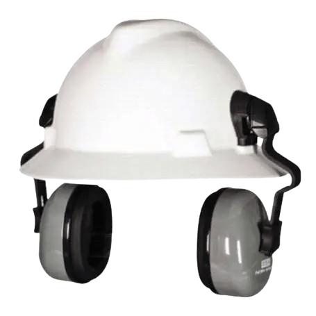
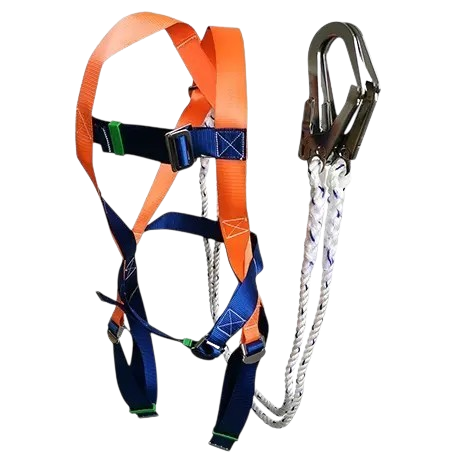
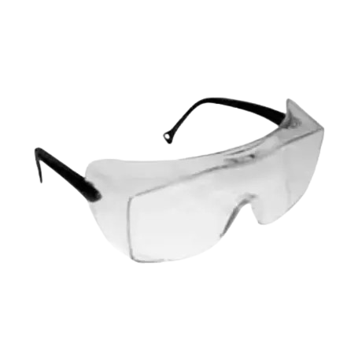
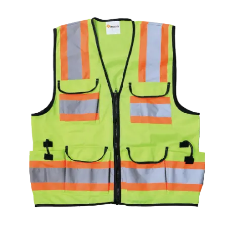

Alat Pelindung Diri dan Standar Operasional Prosedur yang wajib dipahami dan diterapkan oleh seluruh tenaga kerja PT Power Grid Indonesia.
Setiap personel wajib menggunakan APD yang sesuai dengan area kerja dan jenis pekerjaan yang dilakukan. Penggunaan APD yang tidak tepat sama berbahayanya dengan tidak memakai APD sama sekali.

Melindungi kepala dari benturan benda keras dan sengatan listrik hingga 20.000 V. Terbuat dari bahan non-konduktif bersertifikat ANSI Z89.1 Kelas E.

Melindungi tangan dari sengatan listrik saat bekerja pada instalasi bertegangan. Terbuat dari karet isolasi kelas 0 (hingga 1000V) atau kelas lebih tinggi.

Melindungi kaki dari tertimpa benda berat (toe cap baja) dan sengatan listrik (anti-static). Memenuhi standar SNI 7037:2009 dan IEC 61340-5-1.

Melindungi wajah dan mata dari percikan busur listrik (arc flash), serpihan logam, dan radiasi UV/IR saat bekerja pada switchgear dan panel MV/LV.

Melindungi pendengaran dari kebisingan mesin pembangkit dan transformator. Reduksi kebisingan hingga 30 dB (NRR) untuk paparan di atas 85 dB(A).

Full body harness yang mendistribusikan gaya benturan ke seluruh tubuh saat terjatuh dari ketinggian. Wajib digunakan untuk pekerjaan di atas 1,8 meter. Sesuai EN 361.

Melindungi mata dari debu, serpihan, percikan dan radiasi UV/IR saat pekerjaan grinding, pengelasan, atau di area berpotensi percikan. Standar ANSI Z87.1.

Rompi high-visibility dengan pita retroreflektif untuk meningkatkan visibilitas pekerja di area outdoor, gardu induk, dan zona lalu lintas kendaraan berat.
Setiap personel yang memasuki area operasional wajib menggunakan APD yang sesuai. Pelanggaran penggunaan APD dapat mengakibatkan tindakan disipliner hingga pemberhentian sementara dari area kerja sesuai prosedur K3 perusahaan.
Standar Operasional Prosedur yang wajib dipatuhi sebelum, selama, dan setelah melakukan pekerjaan di setiap area operasional PT Power Grid Indonesia.